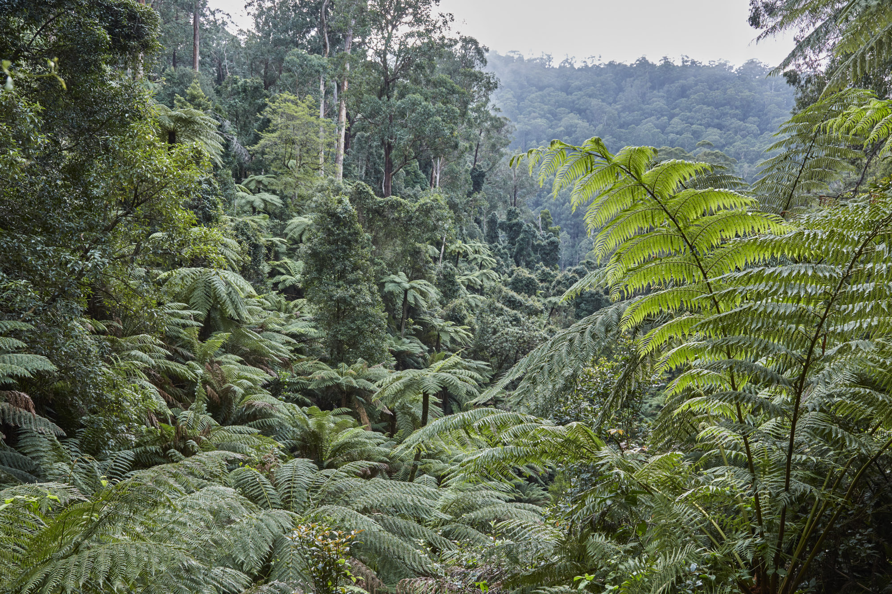

Australian Forests
About
Australia has 125 million hectares of forest, which is 16 per cent of Australia's land area. ... This is about 3 per cent of the world's forest area, and the seventh-largest reported forest area worldwide
1.Goolengook Forest
The Goolengook valley is a remote forested region of south-eastern Australia, located near Orbost in the far eastern corner of Victoria. It contains a number of forest types including a rare warm temperate/cool temperate "Overlap Rainforest". Goolengook is approximately 90 km2 of forest. Some of the forest has been logged but there is over 20 km2 of mature and old growth forest remaining. Some of the best stands of temperate rainforest for this part of Australia occur there.
2.Karawatha Forest

Karawatha Forest or Karawatha nature reserve is approximately 900 hectares of bushland in the Brisbane suburbs of Karawatha and Stretton, Australia. It is one of the largest areas of remnant bushland within Brisbane. The predominant vegetation types in the forest are dry eucalypt forest and woodland with native heath understories. The Karawatha Forest Protection Society was formed to ensure that the bushland was protected from development and is owned and managed by the Brisbane City Council (BCC). Funds raised from the BCC's Bushland Preservation Levy have enabled the acquisition of land for preservation of Karawatha Forest.